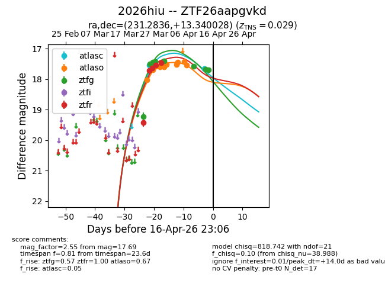
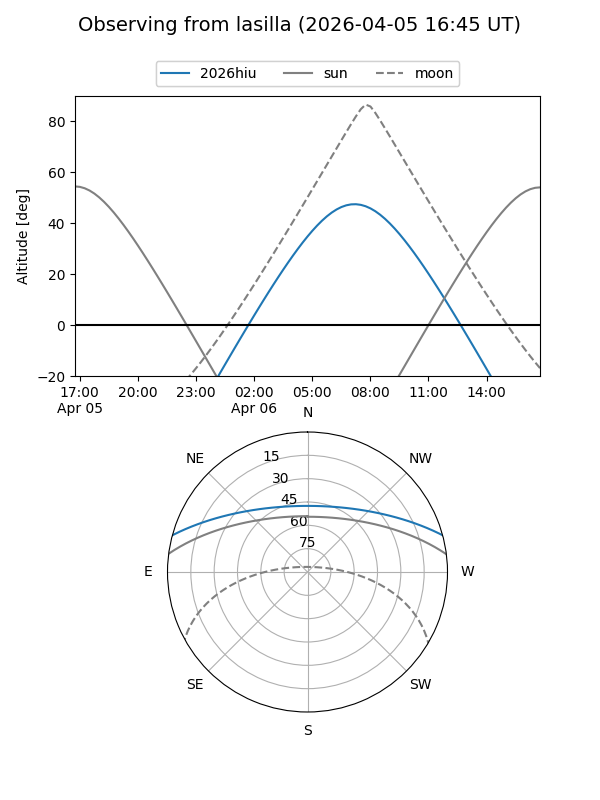
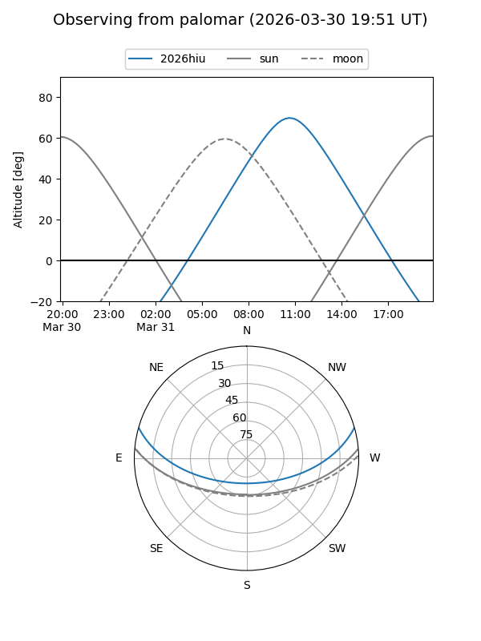
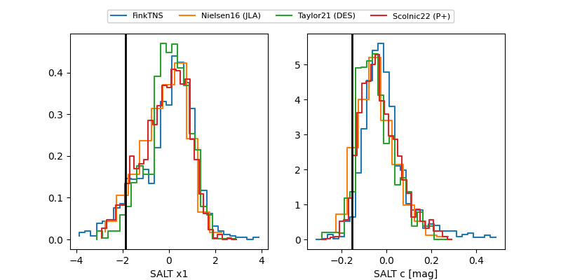

2026hiu
Target 2026hiu at 2026-04-16 23:12
Aliases and brokers:
FINK: link
Lasair: link
ALeRCE: link
TNS: link
YSE: link
alt names
ZTF26aapgvkd (ztf,fink_ztf)
2026hiu (tns,yse)
Coordinates:
equatorial (ra, dec) = 231.2836,+13.34003
equatorial (HMS+DMS) = 15:25:08.06,+13:20:24.10
galactic (l, b) = (19.6948,+51.59515)
Flags:
Photometry:
last atlasc=17.65, atlaso=17.54, ztfg=17.69, ztfr=17.46
2 atlasc, 10 atlaso, 8 ztfg, 5 ztfr detections
Lightcurve

Visibility


Additional plots
